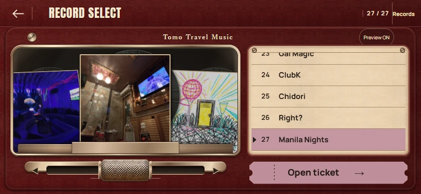

BEAT TRIPPER（本家：とも旅ミュージック） 「アクションゲームの庵」に掲載されました。
とも旅ちゃんねるの音楽ゲーム「とも旅ミュージック」をカスタマイズしたのが「BEAT TRIPPER」です。このたび、ブラウザゲーム紹介サイト「アクションゲームの庵」の音ゲーカテゴリで紹介していただきました。
掲載記事を読む掲載先の
「アクションゲームの庵」について
「アクションゲームの庵」は、2007年に開設された個人運営の無料ブラウザゲーム紹介サイトです。シューティング、格闘、レース、音ゲーなど、好きなジャンルから作品を探せます。気になるゲームを見つけたら、紹介ページでそのまま遊べるのも魅力です。
管理人の「どん」さんは、ご自身で遊んで、ほかの人にも勧めたいと感じた作品を選んでいます。姉妹サイト「無料ゲームnet」で「するめ」さんとして活動しているのも同じ方です。記事には操作方法に加えて、実際に遊んだ人ならではの率直な感想も載っています。
本家「とも旅ミュージック」から
「BEAT TRIPPER」へ
本家で演奏できるのは、とも旅ちゃんねるの旅動画で使ってきた曲です。歌詞には旅先での出来事や、そのときの気持ちを織り込みました。レコードのジャケットをめくり、気になる曲を試聴してから演奏券を開きます。
「BEAT TRIPPER」では、夜景や屋上、南国のステージを巡りながら演奏します。6本のレーンを流れるノーツが光のラインに重なったら、対応するキーを叩きます。旅動画で聴いた一曲を、今度は自分の指で演奏してもらえたらうれしいです。

遊んでくださった方へ
掲載記事では、当時の収録内容である31曲・160譜面と、気に入った曲をFREEモードで繰り返し練習する遊び方にも触れてくださいました。どんさんがEASYのクリアに苦戦したことまで書いてくださって、画面の向こうで遊んでいる様子が伝わってきました。
ご紹介くださったどんさん、遊んでくださった皆さん、ありがとうございます。これからも「BEAT TRIPPER」の開発を続けていきます。